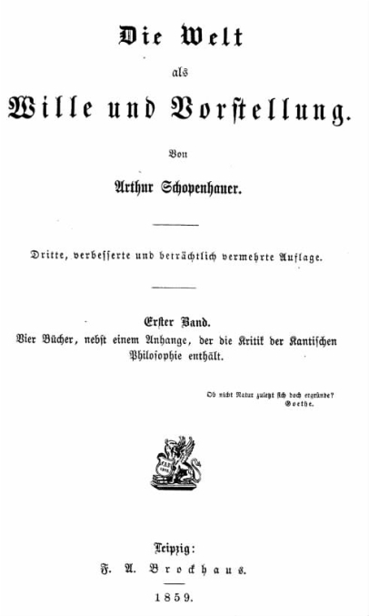

叔本华最伟大的著作《作为意志和表象的世界》共分四卷，第一卷还收录了关于康德哲学的长篇附录。每一卷都呈现出一条清晰的思路。第一卷把世界看做表象，或者说是我们经验中的世界。第二卷又说，这个同样的世界（也是我们自身所在的世界）必须换一个角度来看待，那就是把它看做意志。以前我们曾把现象/物自体的区别称为叔本华哲学的支柱：现在“作为表象的世界”就相当于“现象”，而“作为意志的世界”就是物自体。但到了第三卷，审美思考的出现导致个人意志行为的中断，并把客体世界转变成永恒的理念现实。最后，第四卷强化了叔本华对于由欲望和行动组成的日常生活的悲观主义观点，提倡消灭人自身的意志，由此通向伦理之善，最终达到某种听天由命的神秘主义救赎。
那么，世界首先是表象。换句话说，世界是把自身呈现于主体经验中的那个东西。叔本华首先阐述了一种唯心主义立场。这种观点认为，我们所体验的物质客体之所以有序，之所以存在，取决于认知它们的主体。他称自己的立场为先验的唯心主义，这是康德的说法。但他也强调他与贝克莱具有一脉相承的关系，因为他在后者的信条“存在就是被感知”中看到了唯心主义最初的真理之光——康德的贡献则在于解释当客体世界由空间、时间和因果关系等必要规则控制时，被感知的事物是如何构成客体世界的。叔本华对经验世界的解释就是他在《四重根》中的解释：经验事物由物质组成，物质充斥于不同的空间和时间，并与其他的时间和空间产生因果互动。不过按照叔本华的唯心主义观点，离开了经验主体，所有这些客体都不会存在。
更具体地说，脱离具有经验的主体，个体 事物就不会存在。我们在日常生活中所体验的是不同的事物。一张桌子是不同于其他桌子的个体，一只动物或一个人也是如此。但把世界分为个体事物的有效原则是什么呢？叔本华给出了一个明确而合理的回答：空间和时间中的位置。两张桌子是不同的个体，因为它们处于不同的空间，或者处于不同的时间，或者处于不同的时空。现在，如果你接受这种观点，并和康德一样，认为按照时空结构来组织事物是源自主体，而且这样的组织只适用于现象世界，不适用于自在世界，那么你就会得出结论，个体在世界中的存在方式不同于个体作为物自体的存在方式。如果不是我们主体赋予世界以时间和空间，那么世界就不会分化为个体事物。于是这里就出现了叔本华哲学的两条重要原则：空间和时间是个性化的原则，或者用他喜欢的拉丁文表述，principiurn indi－viduationis（个性化原则）；在“自体”这边不可能存在个体。
叔本华关于唯心主义有四个主要论点。其一，我们不能想象存在于我们思想之外的任何事物，因为“我们在某一时刻想象的……只是一个认知性存在的智性过程”（《作》第二卷，5）。这使人们想起了贝克莱提出的一个具有争议的论点。贝克莱认为没有被感知到的树是不可想象的。然而，叔本华引用这一论点并没有说服力，因为即使我对 独立于我思想之外的世界的想 象 必须以我的思想为前提，但我所想象的事物——独立于我思想的世界——的存在却并非如此。第二个论点认为，如果怀疑主义行不通，唯一可行的就是唯心主义。怀疑主义认为，我们不可能确切地认识物质事物的存在或本质，因为所有能够确定的都是我们自己意识范围之内的。如果拒绝唯心主义（该观点往后继续），认为物质世界完全存在于主体意识之外，那么就不得不承认怀疑主义的胜利，承认我们永远无法确切地认识物质世界。如果我们想坚持认为我们有资格认识 物质世界，认为物质世界具有空间、时间并遵循因果律，那么就必须接受一点，世界不存在于我们的意识之外。
叔本华在此涉足的领域，在他前后都充满着比较复杂的争议。至此讨论的三个观点早在贝克莱那里就出现过。但是，这些观点并不是决定性的，原因很简单。实在论者回答“怀疑论”的争论时会说，如果在怀疑论和唯心论之间进行选择，怀疑论更好。接受这种物质依赖于主体而存在的观点以保证认识，代价未免太高。而且该论点只是说，如果说我们具有任何确切的认识，则必须首选唯心论。人们也许认为不存在确切的认识，坚持认为经验世界仍应被视为独立于主观意识而存在。对于第三点，即存在于意识之外的物质世界是多余的，实在论者可以简单地回答说，意识之外的这个世界可能就是那个 世界。只有唯心论者想说，意识中物质的图像 就已经是物质世界了。实在论者不这么看，他们将独立于我们而存在的世界与我们关于世界的图像明确区分开来。然而，叔本华的一些观点与争论中我们所熟悉的内容相一致，对于批驳一些反对派很有价值。如果实在论既说我们只能确定存在于我们意识中的东西，又说意识之外的世界与我们头脑中建立的世界的图像一模一样，那么就可能遭到他的批评。
叔本华关于唯心主义的第四个论点是他最大的法宝。它建立在主体 与客体 这两个概念之上，主体就是认知者或体验者，客体就是被认知者或被体验者。表象的世界对叔本华而言需要两者兼有。他有两个宏论：第一，任何东西不可能既是客体又是主体；第二，绝对不存在没有客体的主体，或者没有主体的客体。他正是利用最后这个观点建立了唯心主义，而且在事实上使唯心主义成为一种显而易见的东西。如果没有主体去体验或思考，就不存在任何体验的客体。但我们为什么必须以这种方式思考时空中的物质客体呢？叔本华就会说，称它们为客体是为了说明它们能够而且确实存在于我们的体验之中。但他又要求我们相信，我们无论体验到什么，其存在都必须只是相对于我们对它的体验而言。这一简单的原理是叔本华的核心立场。由于这一原理，他认为，一旦人们能够恰当地理解唯心主义，就不会对之产生重大怀疑。不过这个原理确实是有问题的。
《作为意志和表象的世界》第一卷用相当多的篇幅讨论感知和概念推理的区别。我们在前一章看到，叔本华认为，我们与其他动物都具有感知能力，但正是概念和推理把我们与动物区别开来。对世界的感知关乎他所称的智性或理解力，他提出概念思维和判断在其中不起任何作用。另一方面，利用概念形成判断，把判断作为前提和结论互相联系起来，如此等等，则关乎他所称的理性。通过贬低理性的重要性，把概念视为或多或少是由直接经验或直觉模糊抽象而来，叔本华为人类思想和其他生物思想之间的密切同化铺平了道路。
我们读完第一卷再读第二卷，会突然发现一种逆转。这主要体现在一个关键问题上。在作为表象的世界里，我是谁？世界在我面前展开，它包含时空中的个体事物，这些事物纷纷在因果律的作用下发生变化——但我自身正是那个主体，该主体与它所经历的所有客体（包括我称之为身体的那个客体）都有所区别。似乎缺了什么。我似乎成了“长着翅膀而没有身体的天使”（《作》第一卷，99），我面对的世界成了我不属于其中的异己。
叔本华提出这个难题，就是想让我们接受全书的核心思想，下面就揭开它的面纱：
叔本华的意思是，当我行动的时候（当我做什么事时），我的身体会运动；我对身体的运动的意识不同于我对其他感知到的事情的意识。我是“外在”于其他客体，或者说它们“外在”于我——但我自己的身体以一种独特而亲密的方式表明它是我的。可以这样解释：其他事件只是通过被观察到而发生，而我身体的运动是我的意志 的表达。叔本华对意志行为的解释是反二元论的。二元论者认为，精神领域和身体领域是有区别的，意志 行为 （或意志力）是精神领域的事件，而身体运动是发生于身体领域的不同的事件。叔本华对此表示否认：
意愿、奋斗和努力要被看做我们用身体所做的事情，而不是与我们的身体没有关系的事件。它们在身体现实中表现自己，但也保持着“内在”性，因为我们每个人都以一种直接的、观察不到的方式知道自己奋斗的目标。这样，叔本华所称的“身体的行为”就既不属于彻底的精神领域，也不属于彻底的身体领域，而是具有两面性的单一事件：对于同样是普通经验世界之一部分的某个事物，我们每个人都有“内在”意识，并且这一点能够被观察到。
这种对意志行为的解释是叔本华思想中决定性的一步，因为它把人类主体牢牢置于物质世界之中。如果为目标奋斗就启动了身体，那么，在我们的意志行动时，我们就扎根于客体世界之中。因此，叔本华不能将意志的主体看做身体以外的任何事物。同时，他又反过来说，我们的身体性存在不过是意志行为。只要我们经历恐惧或渴望、喜欢或厌恶等情感，只要身体自身根据营养、繁殖或生存等各种无意识功能产生行为，叔本华都洞悉到意志在证明自己——不过是在一种新的广泛的意义上。他想要表明的是，普通的有意识的意志行为在本质上与许多其他启动身体或部分身体的过程毫无区别。不可否认，意志行为包含有意识的思考——它包含身体因智性中的动机而导致运动——但对于叔本华而言，这在原则上跟心脏的跳动、唾液腺的激活或者性器官的唤醒毫无差异。在叔本华看来，所有这些都可被看做个体组织在表现意志。身体本身就是意志；具体而言，身体是生命意志的表现，是一种盲目奋斗，一种位于有意识的思维和行为层面之下的盲目奋斗，其目的是保存生命，再次孕育生命。
这一有趣的想法包含于一种更为广泛的主张中，即整个世界本身就是意志。正如我的身体运动有着客观经验未能揭示的内在性一样，世界的其他事物也是如此。叔本华想寻求一种让自然界所有的根本力量变为同质的解释，并认为科学天生是不能令人满意的，因为科学总是说着说着就没了声音，它解释现象的行为，却说不出现象的本质或隐藏的内在特征。它对自然的统一解释是，所有自然过程都是意志的表现。这初看起来有点异想天开——但我们应当注意叔本华的告诫：他大大地扩展了“意志”这一概念：
所以，我们不能头脑简单地把“意志”从人类行为迁移到整个自然。它只是在还不存在任何合适词语的情况下充当最方便的术语。然而，叔本华哲学的这个方面让人费解。什么是对意志概念“按要求引申”？可能这是对意义的引申：如果“意志”现在具有新的含义，可能会避免叔本华说些荒唐的话。但对这种想法不应该作过于宽松的理解。例如，叔本华坚持认为“意志”与“力量”不可通用（《作》第一卷，111——112），而且问题并非只是“语言上的争论”。通过声称所有过程都是意志，“我们事实上把某件鲜为人知的事当成了为人熟知的事，其实也就是当成了我们立刻完全知晓的那件事”（《作》第一卷，112）。把意志行为归入力量（或者能量，前面也提到过）之下并非叔本华的本意。有关意志的整体原则之所以对我们有所教益，只是因为我们从自身行动中对何为意志行为有了一定的理解。另外一种解释是，叔本华把“意志”的意义固定了，只是放宽了它所指现象的范围。他的确说过在力学中，“求索 表现为地球引力……溃散 表现为接受运动”，以及类似的话（《作》第二卷，298）；他准备着用惊人的话语来谈论“洪水奔流而下的强大的、不可抗拒的冲击力，磁铁始终指向北极的毅力和决心，铁器飞向磁体的迫切渴望”（《作》第一卷，117——118）。这又当如何理解？如果从字面来理解，不免令人难堪。但这里他可能在做一件更为玄妙的事情，试图通过修辞手段告诉我们自身与自然的亲缘关系：无机世界的行为在一定程度上“像 人的欲望那么强烈”，所以“我们不用发挥过多的想象力就能再次认识我们自身的内在本质，即便它非常遥远”。但这并不是说铁真的渴望什么，或者说大水奔流是因为它想要奔流。
我们通常称做意志行为的东西应该是认识世界的明确路标。因此，“意志”必须仍然在运用于人类行动的意义上进行理解；然而，我们必须扩展其意义，至少扩展到不至于野蛮地认为世界上每一个过程背后都有一个思想、一个意识或一个目的。在很大程度上，叔本华让我们相信，世界是盲目地运行的，“以一种枯燥的、片面的、不可改变的方式”运行——每个人类个人意志的许多表现也是如此。下面这段话非常清楚地说明了叔本华的观点：
这当然意味着，自然中的各种力量，那些与意识目的相关和不相关的力量，必须被理解成某种形式的奋斗或对目的的追求，即使是非常微弱的形式。
这种学说还有两个特质值得注意。首先，如果意志是物自体，它就不是存在于时空中的某种东西。时空只是主体强加给作为表象的世界的结构，而物自体是在作为表象的世界被忘却时所遗留的东西。既然叔本华认为时空是个体化的原则，那么物自体就不能分裂成独立的个体。除了表象、空间和时间，只有整个世界才应该被视为意志。其次，作为物自体的意志与日常经验世界的事件之间不可能存在因果关系。因果关系也只是在个体物质事物发生的经验变化这一层面上起作用，在物自体的层面上不起作用。康德似乎要求物自体能够对我们产生因果影响，有些类似于某个经验客体，而叔本华充分地意识到，这种观点正是许多同时代的人接受康德思想的绊脚石。叔本华自己回避这个问题，从不认为作为物自体的意志是一种原因。但是，自在世界与我们经验认识当中的事物和事件之间又是什么关系呢？叔本华有时会谈到经验实际中意志的“表现”，但他喜欢用的术语是“客体化”。这意味着世界呈现给我们的只是我们所能体验到的那一面。我们不得不把单一意志和它在纷繁现象中的客体化看做硬币的两面，即同一世界的两个方面。

图6 《作为意志和表象的世界》书名页
这里一个重要的问题是物自体的可知性。叔本华的意志论是形而上的。对他来说，形而上学解释了实在的根本性质，但形而上学把经验资料用做唯一可能的指南：“世界之谜的答案必须来自对世界自身的理解……形而上学的任务不是忽略世界存在于其中的经验，而是彻底地理解它，因为内在与外在经验肯定是所有认识的主要泉源。”（《作》第一卷，428）严格地说，我们的认识再多，也只能局限于内在与外在经验的现象。所以我们不会——也不能——认识纯粹的物自体。我意识到自己正在进行中的意志行为时，我所认识的是意志的现象表现，不是物自体。然而，正是这种对我自己的意志行为的认识才是认识整个自在世界的关键。但如何认识呢？
我们知道，叔本华拿物质客体世界的经验与对人自身意志行为的“直接”意识进行对比。有时，他认为后者似乎直接就是对物自体的认识：“我的身体是我认识的唯一的客体，我不仅认识它表象的一面，而且认识它被称为意志 的另一面”（《作》第一卷，125）；“每个人都发现他自身就是这种意志，世界的内在本质就由它构成”（《作》第一卷，162）；“一种源自内部 的方法能让我们看清事物的那种真实的内在本质，这种本质我们从外部 无法洞察”（《作》第二卷，195）。这可能在暗示我们内心与物自体直接的认知性接触，还可能暗示我们可以进一步推测世界上万事万物都有一个类似的内在本质。但我们一定想知道，如果物自体是绝对不可知的，这又如何能实现？叔本华比较慎重时就说，我们“立即”认知的意志行为是一个时间中的事件，因此是我们表象的一部分，而不是物自体。但是，他还说，虽然物自体“不是赤裸裸地出现”，但在我们对行动的“内在”意识中，已经“在很大程度上揭开其面纱”（《作》第二卷，197）。在我们对自身意志行为的意识中，我们仍然站在表象和物自体之间二分的这一边，但我们可以说我们距离认识物自体更近了。但这仍然麻烦。如果对我们意志行为的认识是我们最接近物自体的认识，即便在这里也不能直接认识它，那么，我们宣称认识到它是什么的真实基础是什么呢？
作为形而上学的运用，叔本华的意志作为物自体的学说有着明显的缺陷，有人甚至怀疑他是否当真——也许意志 只是一个用来解释广泛现象的概念，不应该引申到不可知的物自体？另一方面，如果这是他的全部立场，那么他不可能像他明确打算的那样揭开“谜底”。鉴于这些问题，他的形而上学理论追随者寥寥无几就不让人觉得奇怪了。然而，如果就此打住，未免目光短浅。叔本华更为严格限制的生命意志 的概念是一种有趣而有力的思想，抓住了能观察到的人类和动物行为的特征。他的意志在人类中自我表现这一观念，以及他发现的我们为意志所统治但又逃离意志的对立性，使他得以给我们生活的很多领域赋予新的含义，这一点我们稍后就将看到。这使他能够把思维过程解释为具有一种有机的、指向生存的功能，能够说明无意识力量和感情对智性的影响，能够指出我们把自己描绘成理性的个体思想者在某种意义上只是幻想，能够把性作为人类心理的核心，能够解释音乐的力量和美学体验的价值，并认为日常生活不可避免地无法圆满，从而提倡抛弃个体欲望来与我们的存在达成和解。对后世哲学家、心理学家和艺术家产生最大影响的正是这些应用，而不是物自体就是意志这种枯燥的形而上的言论。